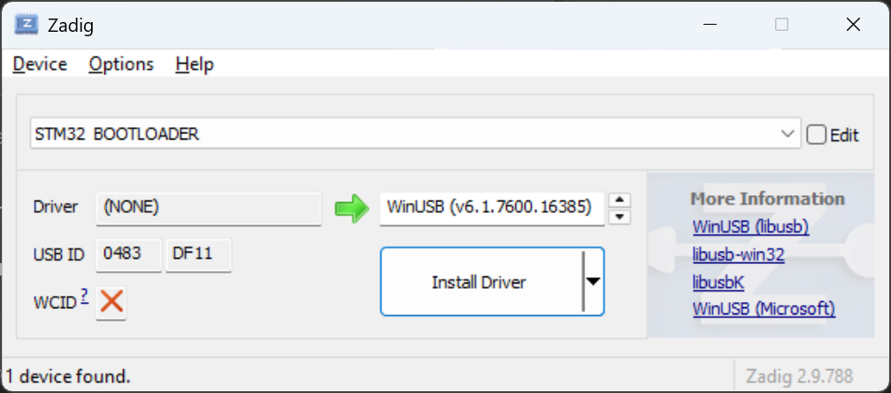
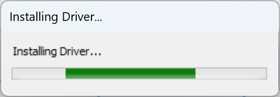
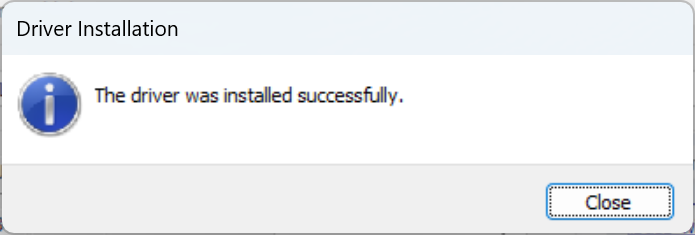

This page can be used to program One ROM USB, using Chrome, Edge, or another Chromium based browser. See Usage for instructions.
If you encounter any issues using this programmer, raise a GitHub issue.



/etc/udev/rules.d/51-one-rom.rules with the following content:
SUBSYSTEM=="usb", ATTRS{idVendor}=="0483", MODE="0666"sudo udevadm control --reload-rules
sudo udevadm trigger